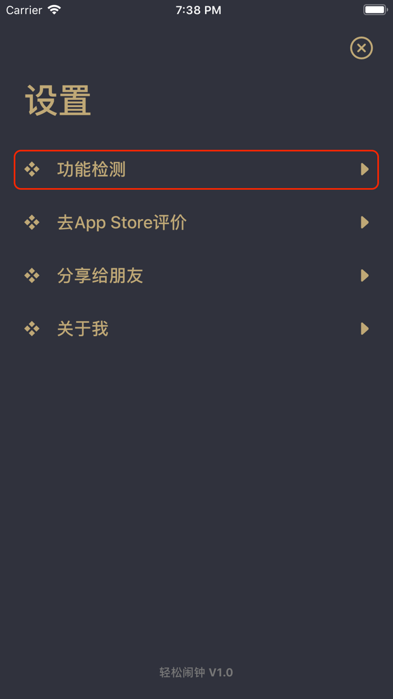
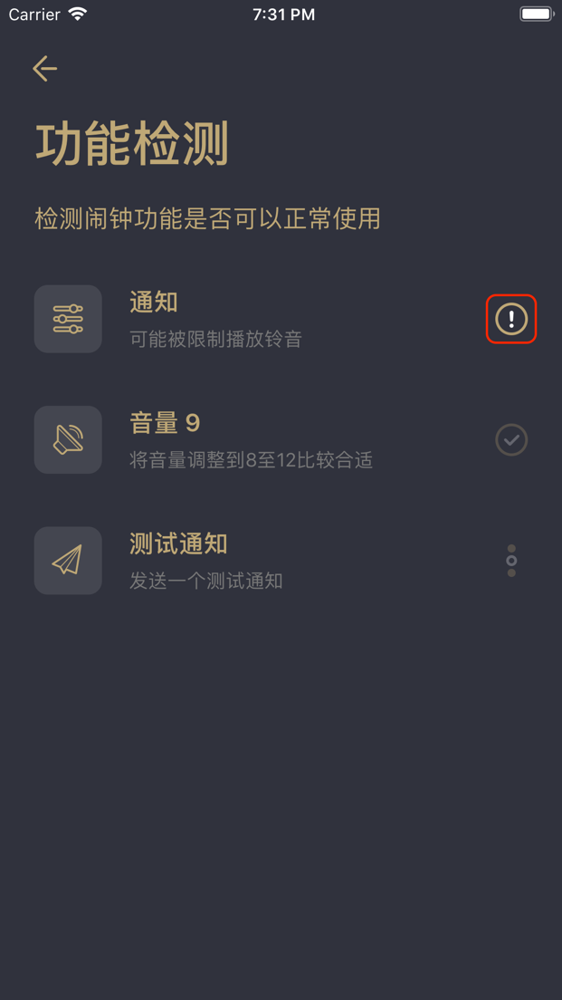
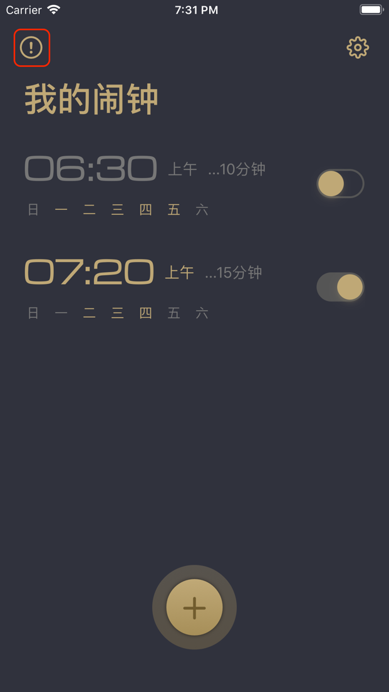
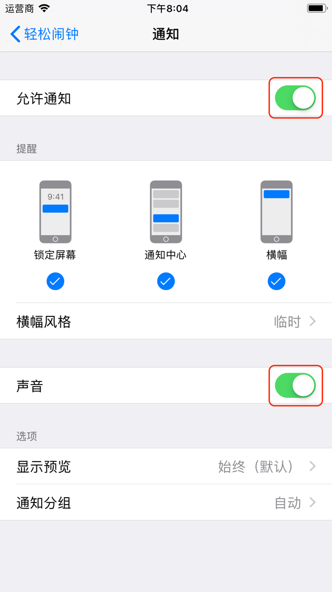

操作轻松闹钟应用非常简单，常用的设置符合闹钟类软件的使用习惯，如果您的闹钟无法正常工作，请尝试按照以下方法解决。
通过应用内自带的功能检测来查找闹钟无法正常工作的原因。
在设置页面内，点击“功能检测”选项，应用自动开始查找可能出现的问题。

检测的项目包含有通知授权，移动设备扬声器音量，最后会发送一个测试通知来检测通知是否可以正常被接收。检测完成后，会在每项检测的右侧显示状态图标，对于通知授权的问题，您可以点击“！”图标来尝试解决。

如果扬声器音量项目有问题，说明您的移动设备输出的音量没有达到建议的音量值，您可以通过按下移动设备侧面的音量调整按钮将音量调整大一些，我们建议您的音量值调整到8至12之间，这样既不会因为声音太小导致您听不到闹钟铃声，也不会因为声音太大吓到您。（这一结果可能因人而异）
一般情况下，闹钟无法正常工作最大的可能是通知授权的问题，在应用的“我的闹钟”页面，如果您看到页面左上角有带有“！”的图标，说明您的通知授权有问题，点击图标按照提示可以帮助您解决这个问题。

直接在移动设备的“设置”中查看通知功能的状态。
打开移动设备的“设置”应用，找到“通知”选项并点击，找到“轻松闹钟”应用并点击进入。
将“通知”的开关打开，并确保“声音”选项打开。

完成这些后，闹钟功能应该可以正常工作了。